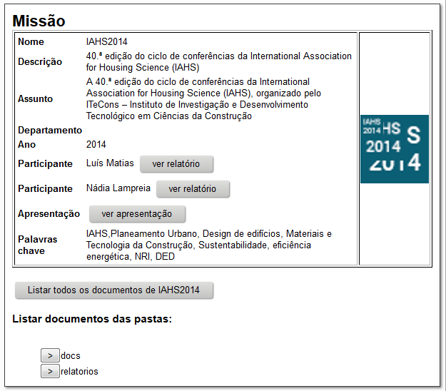
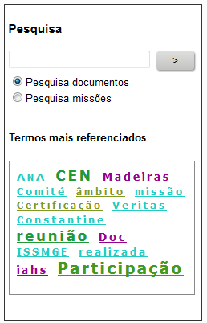

DocRep
-Repositório de Relatórios e Documentos de Missões do LNEC
Índice
- DocRep
-Repositório de Relatórios e Documentos de Missões do LNEC
- O que é o DocRep?
- Porquê
o DocRep?
- Como
funciona o DocRep?
- Conteúdos
- Pesquisar
- Dúvidas e sugestões
O que é o DocRep?
O
DocRep
-Repositório de Relatórios e Documentos de Missões do LNEC (http://docrep.lnec.pt/)
é uma plataforma que arquiva
e disponibiliza em formato digital os relatórios de missões do LNEC,
bem como
toda a documentação disponibilizada ao participante na missão, que seja
de
interesse para toda a comunidade científica do LNEC.
Porquê
o DocRep?
O DocRep tem
como propósito dar
cumprimento às
orientações definidas pela
Nota de Serviço nº 15/2014
(http://andromeda.lnec.pt:9080/netlnec/notas_servico/2014/nota_servico_2014_15.html),
designadamente no que se refere ao arquivo, promoção e divulgação,
através da
Intranet, dos relatórios e outros documentos que resultem de:
1.
A
participação em reuniões de
caráter científico (congressos, seminários, workshops) continue a ser
relatada
através do mod. 583, a que deve anexar-se os documentos distribuídos,
em
particular as atas;
2.
todas
as participações em Comissões Técnicas (missões
tipo C) sejam seguidas da elaboração dum relato detalhado da atividade
desenvolvida (mod. 585), que deve referir:
- os
setores do LNEC a que interessa dar conhecimento;
- as
principais
conclusões; e,
- comentários
gerais julgados pertinentes; a agenda da
reunião, a lista de participantes e a ata da reunião, quando existirem,
bem
como outros documentos disponibilizados deverão ser anexados a este
relato;
Como
funciona o DocRep?
Conteúdos
Os conteúdos do DocRep são geridos pelo CIC/DIEI com base nos
relatórios de missão elaborados ao abrigo da Nota de
Serviço nº15/2014 . O sistema assenta em três tipos de conteúdos:
- Relatórios de Missão.
- Metadados caraterizadores da missão.
- Documentos anexos aos relatórios de missão, quando entregues.
Os metadados caraterizadores de cada missão são obtidos com base nos
relatórios de missão recebidos dos participantes para divulgação. Na
imagem seguinte apresenta-se um caso concreto de metadados referente
a uma missão.

A
partir do ecran acima é possível ter acesso aos relatórios dos
participantes e a todos os documentos anexos aos referidos relatórios.
Caso exista e seja disponibilizada é também possível ter acesso a uma apresentação da conferência, simposium ou seminário.
Pesquisar
O
sistema permite a pesquisa nos metadaddos das missões e a pesquisa nos
documentos e pode ser realizado digitando a palavra a pesquisar na
caixa de pesquisa ou clicando num dos termos mais referenciados
sugerido pela nuvem de palavras.
Selecionando um ou outro dos tipos de pesquisa, a mesma far-se-á sobre
o conteudo dos documentos ou sobre os metadados das missões.

A caixa de pesquisa aceita expressões booleanas simples do tipo:
palavra1 AND palavra2
Resultado: Lista todos os documentos que contêm ambas as palavras
palavra1 AND palavra2 OR palavra3
Resultado: Lista todos os documentos que contêm as palavras palavra1 e palavra2 mais todos os documentos que contêm a palavra3
palavra1 OR palavra2
Resultado: Lista todos os documentos que contêm a palavra1 mais todos os documentos que contêm a palavra2
palavra1 palavra2
Resultado: igual ao anterior (o espaço é interpretado como o operador lógico OR.
palavra1 NOT palavra2
Resultado:Lista todos os documentos com a palavra1, mas que não incluam a palavra2.
Nota: Os operadores lógicos podem estar em maiúsculas ou minúsculas
Dúvidas e sugestões
Quaisquer dúvidas e/ou sugestões sobre o DocRep podem ser esclarecidas e/ou enviadas para o email jfn@lnec.pt ou através da extensão 3959 (Joaquim Neto)